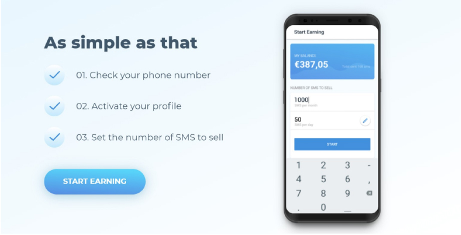
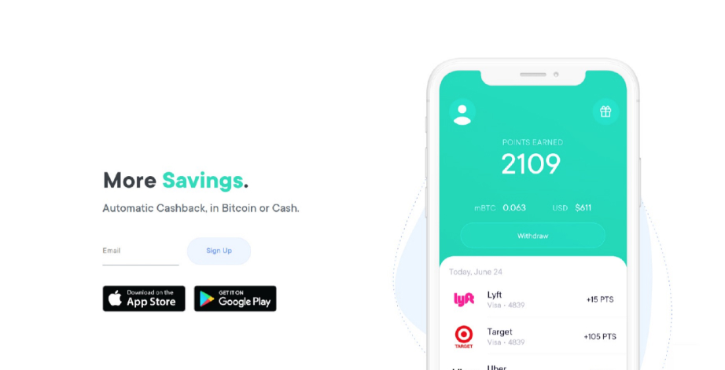
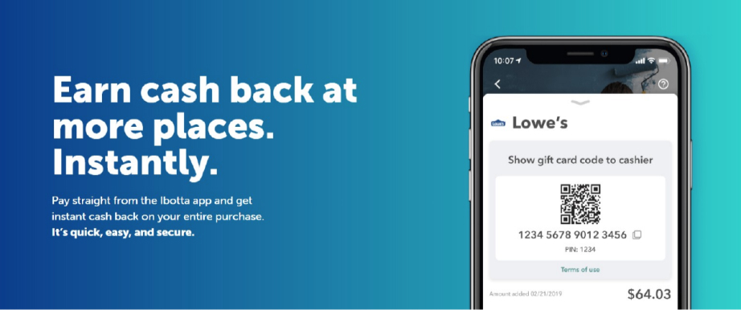
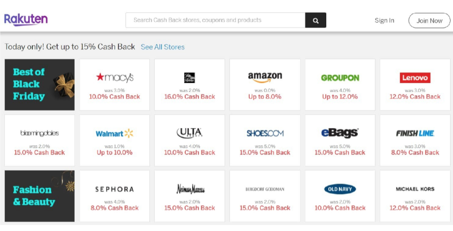
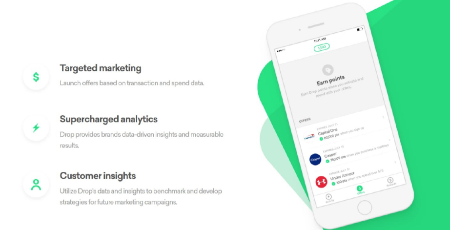
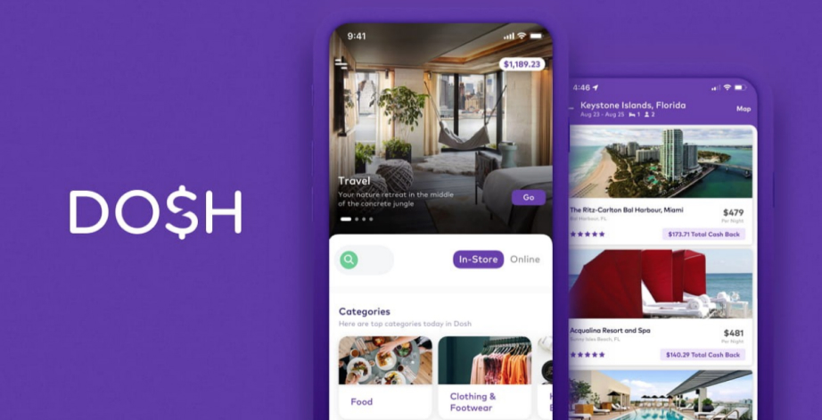
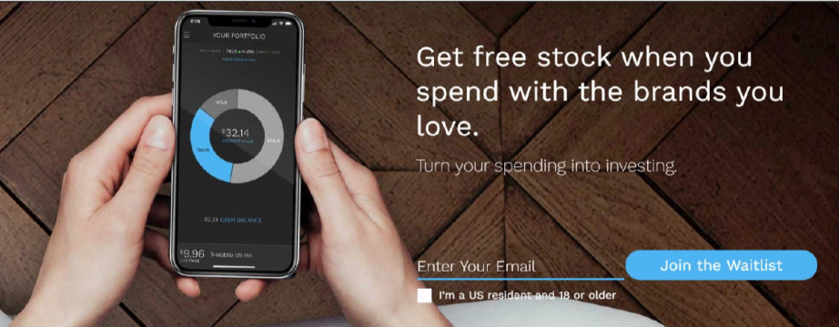
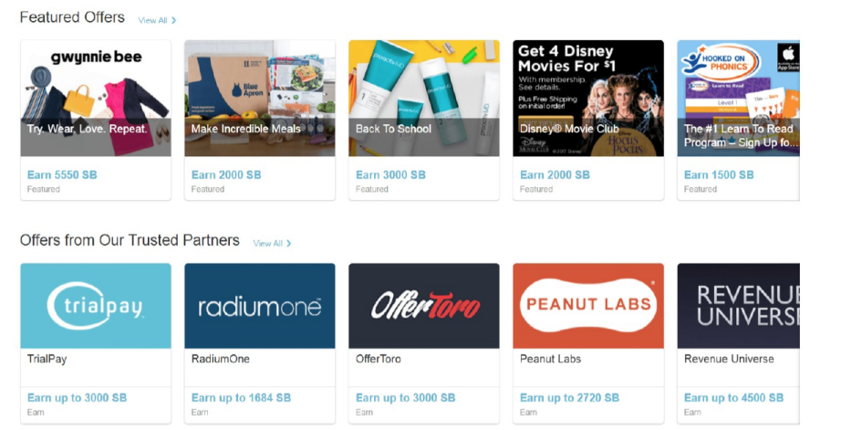
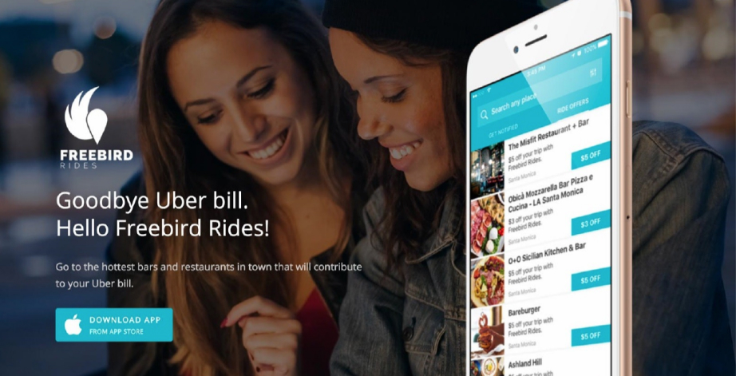
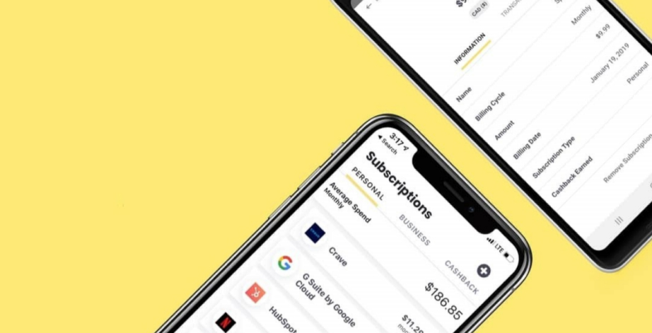

Best Cashback App in 2020
Cashback apps are apps that pay you for things you already do every day, such as sending SMS messages or shopping. While cashback apps won’t make you a millionaire, they make it possible to earn a nice side income without any effort.
In this article, we’re taking a closer look at the top 10 best cashback apps available in 2020 to help you turn your smartphone into a money-making machine. But first, we feel that it’s important that we explain how cashback apps and other cashback solutions work.
What Is a Cashback App?
In the simplest terms, a cashback app is an app that pays its users a small amount of money for certain
activities. The term “cash back” was popularized by banks issuing credit and debit cards as a way of
getting money for using a credit or debit card when paying for goods and services.
For example, the Alliant Cashback Visa is a great example of a high-percentage cash back card, allowing
its holders to earn 3% cash back in year one & 2.5% cash back after, with rates as low as 11.99% APR.
You can read more about this cash back card on Nerd Wallet.
Cashback apps took the concept to the next level, making it possible for their users to earn money for
everything from sending SMS messages to shopping. If you’re wondering how cash earning apps work,
you’re not the only one, but the concept behind them is quite simple.
Essentially, the company behind a cash reward app negotiates a revenue-sharing deal with some other
company (or companies) to split the money spent by the users of the app. The cash reward app then
splits its share with its users, so everyone gets his or her share of the pie.
How to Get Free Money with Cashback Apps?
Don’t expect to download just one cashback app and instantly earn enough money for a lavish dinner or
even the top-tier Netflix subscription. To unlock the full potential of cash earning apps, you need to use
multiple apps at the same time and use them as effectively as possible.
Many people make the mistake of installing several cash earning apps that do more or less the same
thing. Even if you consider yourself to be a serious shopaholic, you don’t need 5 different cashback apps
that target shopping. Instead, you should install just one or two and explore what other types of earn
money apps have to offer.
Make sure to use your cashback apps as often as possible because that’s the only way of how to make a steady income. Some cashback offers may be available only at certain times of the day, so it pays off to
check them often otherwise you might miss a great opportunity to earn money.
Top 10 Best Cashback Apps
-
Cash4SMS
Most Android apps that pay you money require you to shop at certain stores, spend time filling out a survey after survey, or watch mobile ads that prevent you from doing anything else on your smartphone while they play. Cash4SMS is different.

This cash back app allows you to turn unused SMS messages into cash without requiring you to do anything at all. After you install the app, you simply activate your profile, set the number of SMS messages you want to sell, and watch your balance grow. Your earning potential is limited mostly by your mobile plan and how many SMS messages you don’t use.Out of all cash back apps listed in this article, Cash4SMS is without a doubt the easiest way of how to get free money. The only downside is that it works only on Android devices, but considering how much money it can earn you, it’s not a bad idea to get a cheap Android smartphone just so you can use it.
-
Pei
Pei is a cashback app with a cryptocurrency twist. It works just like most cashback apps out there: you link your card, spend as you would at your favorite spots, and receive automatic cash back.
The major selling point is that Pei allows you to choose if you want to receive your funds in Bitcoin or cash. Why would you want to receive your funds in Bitcoin? Perhaps because you would like to capitalize on Bitcoin’s price fluctuations and double or triple your funds in a few days or weeks. That said, Bitcoin’s price fluctuations are also a good reason to avoid this payment method and stick with cash.
-
Ibotta
Every day, major retailers across the country offer attractive cashback deals through Ibotta. They include Walmart, Amazon, Target, The Home Depot, Old Navy, Drizly, Expedia, Blue Apron, Under Armour, Samsung, Pet Smart, Hotwire, Shell, and others. Ibotta allows you to quickly and securely pay straight from its app and get instant cash back on your entire purchase.
Since there are absolutely no fees to worry about, the cash back amount you see on your smartphone is actually what you get in your bank account.
-
Rakuten
Formerly known as Ebates, Rakuten is a popular cashback app that offers a $10 sign-up bonus to all new users and cash backs of up to 40% at over 2,500 stores across the country. You can choose if you want to receive your money in the form of a check or PayPal payment.
In addition to thousands of irresistible deals, Rakuten also runs a great referral program, which rewards users for spreading the word about the app. The rewards vary, but you can find them on the Refer-A-Friend page.
-
Drop
Loyalty pays off, especially with Drop. This cashback app limits you to five favorite brands to maximize the rewards you receive from them. After linking your card, Drop automatically scans your purchases and gives you reward points when it detects that you’ve made a purchase from one of the brands you selected.
When you accumulate enough reward points, you can exchange them for cash or redeem them at places like Amazon, Netflix, and Starbucks.
-
Dosh
Your next hotel reservation can be both luxurious and affordable because Dosh offers cash backs of up to 40% on hotel reservations. If you rarely spend a night in a hotel room, you should still install Dosh to take advantage of automatic cash backs of up to 10% at thousands of stores and restaurants.
When you refer a friend, you get extra $5, and you can transfer your funds to a bank account, PayPal, or donate everything to charity straight from the app.
-
Bumped
Have you ever wondered what it would be like to own a share of a major company but never dared to enter the stock market? With Bumped, you can become an investor just by shopping at selected stores. Bumped was founded in 2017 by David Nelsen, and it has since received multiple awards for being the most innovative cashback app currently out there.
The only problem is that you have to join a rather long waitlist before you can start earning money.
-
SwagBucks
SwagBucks is a great cashback app to start your day with. It allows you to earn points and gift cards by watching videos and answering surveys. So far, the app has paid its members around $400 million, and the number keeps growing every day.
Unlike many other cashback apps, SwagBucks has been receiving nothing but positive reviews from its users even since it first launched, so it’s clearly doing something right, and there’s nothing stopping you from discovering what it is.
-
FreeBird
If you haven’t yet added this cashback app to your list of the best cashback apps, you should do it soon. FreeBird rewards you every time you take a ride with Uber or Lyft, and all you need to do is make a valid purchase at the location using a credit card linked to your FreeBird account.
FreeBird can afford to do this because it partners with restaurant and bar owners, who sponsor Uber and Lyft rides to their locations. They get more customers, and you get to save money.
-
Butter
Most people these days pay for multiple subscriptions, which may include a streaming service like Netflix, cloud storage like Dropbox, or a premium membership like LinkedIn Premium or Amazon Prime. With Butter, you can keep track of all your subscriptions and earn a 1% cash back when you link your Mastercard.
Butter is paid directly by its partners, who want to encourage the users of this new cash back app to remain loyal to them. That said, Butter should be useful even without the cashback offer because it helps you discover popular subscriptions and lower your recurring expenses.
Conclusion
As you can see, earning extra cash on the side is now easier than ever thanks to an ever-growing selection of cashback apps. To become a successful “cashbacker,” don’t limit yourself to just one app. Instead, we recommend you try multiple cashback apps from our list and select those that work best for you.